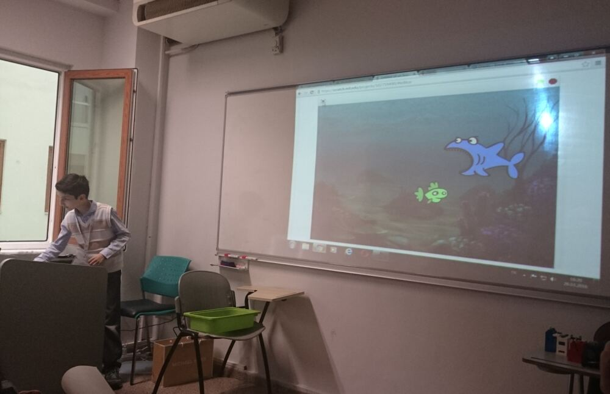
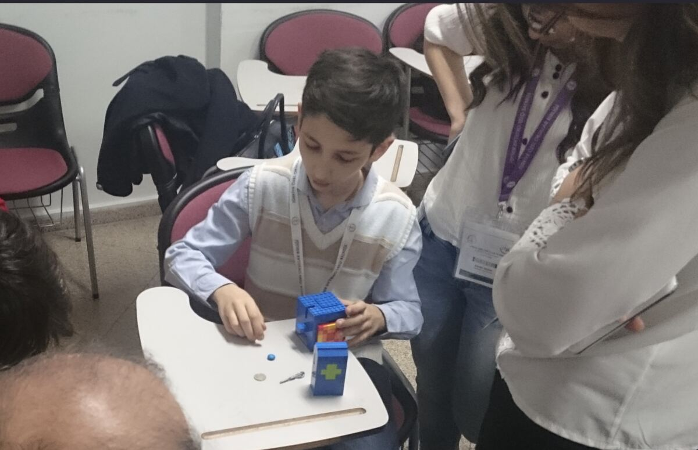

3.77
CGPA / 4.00
Maintained while double-majoring in AI & Data Engineering and Computer Science.
Undergraduate researcher at Koç University’s Security, Privacy and Data Engineering (SPADE) Lab and double-major student in AI & Data Engineering and Computer Science at Özyeğin University.I currently conduct research on Membership Inference Attacks in the domain of Large Language Models at SPADE Lab, a topic in AI Security that is becoming more important by the day.
What I'm working on right now.
Working in the SPADE (Security, Privacy and Data Engineering) Lab at Koç University on membership inference attacks against fine-tuned autoregressive language models. The question is basically: can you tell whether a given piece of text was in a model’s training data just from how it behaves? Turns out they’re worse at keeping secrets than they’d like you to think. Part of the lab's ongoing work on trustworthy language models.
During the Summer 2026 term, I gave remote peer-teaching sessions for MATH103 (Single-Variable Calculus), MATH104 (Multi-Variable Calculus & Infinite Series), MATH212 (Differential Equations) and MATH217 (Probability & Statistics). I did this for two reasons: because I love mathematics, and because teaching the fundamentals forces me to understand them more deeply.
A quick view of academic standing and the work behind it.
Maintained while double-majoring in AI & Data Engineering and Computer Science.
Consistently ranked in the top 3 of my department throughout university.
Top 3% across 1,727 engineering students.
Performance sustained across every completed semester.
Four directions shaping my research.
Membership inference attacks on fine-tuned autoregressive language models, especially methods that determine whether a given text sample was part of a model's training data from its output probabilities and loss behavior.
Multi-turn jailbreaking and adversarial prompting strategies that exploit persuasion, context accumulation, and conversational framing, with an emphasis on understanding why safety fine-tuning fails under sustained interaction.
Language modeling, attention, transformer internals, and the mechanisms underlying the systems I study from both the implementation and adversarial sides.
How much psychologically meaningful structure can language models recover from text, from mood and affective signals to personality traits and clinically relevant linguistic patterns.
Built 7 of the web scrapers behind a 1.27M+ product-record pipeline as part of an 18-person research team under Prof. Olcay Taner Yıldız. The resulting CPI-weighted web price indexing paper was accepted and presented at ASYU 2026, and I also contributed its literature review.
Presented · ASYU 2026A LLaMA-2-style decoder-only transformer in Python, with RoPE, masked self-attention, RMSNorm, and SwiGLU feed-forward layers, built with a classmate from CS449 (Introduction to Natural Language Processing) on our existing SequenceProcessing and ComputationalGraph primitives.
↗TypeScript · Terminal UIA CLI tool for reading Hacker News through a stylized sci-fi terminal interface.
↗Optimization · CLICLI linear programming and mixed-integer programming solver built on a PuLP/CBC backend.
↗A compact two-page preview from the batu-academia repository.
Loading preview from GitHub
This preview could not be rendered. Open the full notes ↗
Pages 1–2 shown · use the arrows to browse the notebook
A double-major foundation in AI, data engineering, and computer science.
Achieved High Honor academic standing in all four semesters to date, clearing the required ≥3.50 GPA bar with zero failing grades every single term.
One of three awarded across ~300 eligible students in the Faculty of Engineering for 2025–2026, ranked purely on cumulative GPA. Received the scholarship again for 2026–2027 after meeting the academic merit conditions for 2025–2026. Each award provides a 25% tuition waiver.
Mentored approximately 20 first-year AI & Data Engineering students, maintained a curated GitHub repository of course materials and academic guides, and ran an active advising channel for coursework, programs, and research opportunities.
CEFR C1 proficiency, with perfect section scores in Listening and Writing.
Spent three years on my high school's FRC Team 8151, Wildfire, from 2020 to 2023. I joined the Programming subteam in my first year and spent the following two years on the Electronics subteam. Alongside the technical work, I was usually the one keeping the team laughing when things got stressful.
Team 8151 Wildfire on Instagram ↗My first formal programming courses were in high school, where I learned Java and Python.
Before high school, I was already experimenting with programming. I started using Scratch around age 11 and shared 30 projects there. In sixth grade, I presented some of my Scratch work and LEGO candy-dispensing machines at an education technology conference at Yeditepe University in 2016.
View my old Scratch archive ↗
